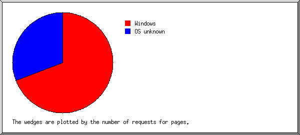

Web Server Statistics for tierrasegura.com Web Server Statistics for tierrasegura.com
Web Server Statistics for tierrasegura.com Web Server Statistics for tierrasegura.com(Go To: Top: General Summary: Monthly Report: Daily Summary: Hourly Summary: Domain Report: Organization Report: Failed Referrer Report: Referring Site Report: Browser Report: Browser Summary: Operating System Report: Status Code Report: File Size Report: File Type Report: Directory Report: Request Report)
(Figures in parentheses refer to the 7-day period ending Nov 30
2004 at 10:24 AM).
Successful requests: 2,554 (371)
Average successful requests per day: 217 (52)
Successful requests for pages: 321 (39)
Average successful requests for pages per day: 27 (5)
Failed requests: 22 (0)
Distinct files requested: 61 (37)
Distinct hosts served: 49 (2)
Data transferred: 10.002 megabytes (2.524 megabytes)
Average data transferred per day: 871.472 kilobytes (369.365 kilobytes)
(Go To: Top: General Summary: Monthly Report: Daily Summary: Hourly Summary: Domain Report: Organization Report: Failed Referrer Report: Referring Site Report: Browser Report: Browser Summary: Operating System Report: Status Code Report: File Size Report: File Type Report: Directory Report: Request Report)
Each unit ( ) represents 10 requests
for pages or part thereof.
) represents 10 requests
for pages or part thereof.
month: #reqs: #pages: --------: -----: ------: Nov 2004: 2554: 321:Busiest month: Nov 2004 (321 requests for pages).
(Go To: Top: General Summary: Monthly Report: Daily Summary: Hourly Summary: Domain Report: Organization Report: Failed Referrer Report: Referring Site Report: Browser Report: Browser Summary: Operating System Report: Status Code Report: File Size Report: File Type Report: Directory Report: Request Report)
Each unit () represents 3 requests
for pages or part thereof.
day: #reqs: #pages: ---: -----: ------: Sun: 101: 17:Mon: 163: 18:
Fri: 1001: 122:
(Go To: Top: General Summary: Monthly Report: Daily Summary: Hourly Summary: Domain Report: Organization Report: Failed Referrer Report: Referring Site Report: Browser Report: Browser Summary: Operating System Report: Status Code Report: File Size Report: File Type Report: Directory Report: Request Report)
Each unit () represents 2 requests
for pages or part thereof.
hour: #reqs: #pages: ----: -----: ------: 0: 10: 5:6: 23: 7:
(Go To: Top: General Summary: Monthly Report: Daily Summary: Hourly Summary: Domain Report: Organization Report: Failed Referrer Report: Referring Site Report: Browser Report: Browser Summary: Operating System Report: Status Code Report: File Size Report: File Type Report: Directory Report: Request Report)

Listing domains, sorted by the amount of traffic.
#reqs: %bytes: domain
-----: ------: ------
2423: 73.13%: .gt (Guatemala)
92: 18.56%: .net (Networks)
35: 8.14%: .com (Commercial)
3: 0.09%: .sc (Seychelles)
1: 0.08%: [unresolved numerical addresses]
(Go To: Top: General Summary: Monthly Report: Daily Summary: Hourly Summary: Domain Report: Organization Report: Failed Referrer Report: Referring Site Report: Browser Report: Browser Summary: Operating System Report: Status Code Report: File Size Report: File Type Report: Directory Report: Request Report)

Listing organizations, sorted by the number of requests.
#reqs: %bytes: organization
-----: ------: ------------
1630: 33.79%: guate.net.gt
793: 39.34%: intelnet.net.gt
90: 18.40%: gua.net
35: 8.14%: alexa.com
3: 0.09%: sc
1: 0.08%: twtelecom.net
1: 0.08%: 12
1: 0.08%: ev1servers.net
(Go To: Top: General Summary: Monthly Report: Daily Summary: Hourly Summary: Domain Report: Organization Report: Failed Referrer Report: Referring Site Report: Browser Report: Browser Summary: Operating System Report: Status Code Report: File Size Report: File Type Report: Directory Report: Request Report)

Listing referring URLs, sorted by the number of failed requests.
#reqs: URL
-----: ---
3: http://www.whois.sc/
1: http://www.tierrasegura.com/
(Go To: Top: General Summary: Monthly Report: Daily Summary: Hourly Summary: Domain Report: Organization Report: Failed Referrer Report: Referring Site Report: Browser Report: Browser Summary: Operating System Report: Status Code Report: File Size Report: File Type Report: Directory Report: Request Report)

Listing referring sites, sorted by the number of requests.
#reqs: site
-----: ----
1439: http://www.tierrasegura.com/
52: http://tierrasegura.com/
3: http://www.whois.sc/
1: http://inversionescf.com:2086/
(Go To: Top: General Summary: Monthly Report: Daily Summary: Hourly Summary: Domain Report: Organization Report: Failed Referrer Report: Referring Site Report: Browser Report: Browser Summary: Operating System Report: Status Code Report: File Size Report: File Type Report: Directory Report: Request Report)

Listing browsers with at least 1 request for a page, sorted by the number of requests for pages.
#reqs: #pages: browser
-----: ------: -------
312: 123: Mozilla/3.01 (compatible;)
671: 91: Mozilla/4.0 (compatible; MSIE 6.0; Windows NT 5.1)
833: 51: Mozilla/4.0 (compatible; MSIE 6.0; Windows 98; FunWebProducts-MyWay; Alexa Toolbar)
35: 17: ia_archiver
119: 8: Mozilla/4.0 (compatible; MSIE 6.0; Windows NT 5.1; SV1)
55: 6: Mozilla/5.0 (Windows; U; Windows NT 5.1; en-US; rv:1.7.2) Gecko/20040804 Netscape/7.2 (ax)
38: 6: Mozilla/5.0 (Windows; U; Windows NT 5.1; es-ES; rv:1.7.1) Gecko/20040707
146: 5: Mozilla/2.0 (compatible; MS FrontPage 4.0)
57: 4: Mozilla/4.0 (compatible; MSIE 6.0; Windows 98; Win 9x 4.90; ESB{EBD3F4D6-3393-41E2-9733-DB8659860613}; Alexa Toolbar)
33: 3: Mozilla/4.0 (compatible; MSIE 6.0; Windows NT 5.1; .NET CLR 1.0.3705)
3: 3: SurveyBot/2.3 (Whois Source)
1: 1: NPBot (http://www.nameprotect.com/botinfo.html)
1: 1: Mozilla/4.0 (Compatible; MSIE 6.0; Windows NT 5.1)
1: 1: Microsoft Data Access Internet Publishing Provider Cache Manager
1: 1: Sqworm/2.9.85-BETA (beta_release; 20011115-775; i686-pc-linux-gnu)
248: 0: [not listed: 1 browser]
(Go To: Top: General Summary: Monthly Report: Daily Summary: Hourly Summary: Domain Report: Organization Report: Failed Referrer Report: Referring Site Report: Browser Report: Browser Summary: Operating System Report: Status Code Report: File Size Report: File Type Report: Directory Report: Request Report)

Listing browsers with at least 1 request for a page, sorted by the number of requests for pages.
#: #reqs: #pages: browser --: -----: ------: ------- 1: 1714: 158: MSIE : 1714: 158: MSIE/6 2: 458: 128: Netscape (compatible) 3: 35: 17: ia_archiver 4: 93: 12: Mozilla : 93: 12: Mozilla/1 5: 3: 3: SurveyBot : 3: 3: SurveyBot/2 6: 1: 1: Sqworm : 1: 1: Sqworm/2 7: 1: 1: Microsoft Data Access Internet Publishing Provider Cache Manager 8: 1: 1: NPBot (http: : 1: 1: NPBot (http://www : 248: 0: [not listed: 1 browser]
(Go To: Top: General Summary: Monthly Report: Daily Summary: Hourly Summary: Domain Report: Organization Report: Failed Referrer Report: Referring Site Report: Browser Report: Browser Summary: Operating System Report: Status Code Report: File Size Report: File Type Report: Directory Report: Request Report)

Listing operating systems, sorted by the number of requests for pages.
#: #reqs: #pages: OS --: -----: ------: -- 1: 1807: 170: Windows : 824: 103: Windows XP : 833: 51: Windows 98 : 93: 12: Unknown Windows : 57: 4: Windows ME 2: 746: 150: OS unknown 3: 1: 1: Unix : 1: 1: Linux
(Go To: Top: General Summary: Monthly Report: Daily Summary: Hourly Summary: Domain Report: Organization Report: Failed Referrer Report: Referring Site Report: Browser Report: Browser Summary: Operating System Report: Status Code Report: File Size Report: File Type Report: Directory Report: Request Report)

Listing status codes, sorted numerically.
#reqs: status code
-----: -----------
674: 200 OK
3: 206 Partial content
1877: 304 Not modified since last retrieval
5: 401 Authentication required
17: 404 Document not found
(Go To: Top: General Summary: Monthly Report: Daily Summary: Hourly Summary: Domain Report: Organization Report: Failed Referrer Report: Referring Site Report: Browser Report: Browser Summary: Operating System Report: Status Code Report: File Size Report: File Type Report: Directory Report: Request Report)

size: #reqs: %bytes:
-----------: -----: ------:
0: 1878: :
1b- 10b: 0: :
11b- 100b: 0: :
101b- 1kb: 161: 1.09%:
1kb- 10kb: 346: 15.47%:
10kb-100kb: 165: 54.35%:
100kb- 1Mb: 4: 29.09%:
(Go To: Top: General Summary: Monthly Report: Daily Summary: Hourly Summary: Domain Report: Organization Report: Failed Referrer Report: Referring Site Report: Browser Report: Browser Summary: Operating System Report: Status Code Report: File Size Report: File Type Report: Directory Report: Request Report)

Listing extensions with at least 0.1% of the traffic, sorted by the amount of traffic.
#reqs: %bytes: extension -----: ------: --------- 735: 64.18%: .jpg [JPEG graphics] 110: 16.47%: .swf 269: 8.27%: .htm [Hypertext Markup Language] 241: 7.55%: .exe [Executables] 47: 1.40%: [directories] 149: 1.10%: .js [JavaScript code] 991: 0.98%: .gif [GIF graphics] 12: 0.05%: [not listed: 2 extensions]
(Go To: Top: General Summary: Monthly Report: Daily Summary: Hourly Summary: Domain Report: Organization Report: Failed Referrer Report: Referring Site Report: Browser Report: Browser Summary: Operating System Report: Status Code Report: File Size Report: File Type Report: Directory Report: Request Report)

Listing directories with at least 0.01% of the traffic, sorted by the amount of traffic.
#reqs: %bytes: directory -----: ------: --------- 845: 80.65%: /images/ 1461: 11.78%: [root directory] 248: 7.57%: /_vti_bin/
(Go To: Top: General Summary: Monthly Report: Daily Summary: Hourly Summary: Domain Report: Organization Report: Failed Referrer Report: Referring Site Report: Browser Report: Browser Summary: Operating System Report: Status Code Report: File Size Report: File Type Report: Directory Report: Request Report)

Listing files with at least 20 requests, sorted by the number of requests.
#reqs: %bytes: last time: file -----: ------: ------------------: ---- 241: 7.55%: Nov/19/04 11:39 AM: /_vti_bin/_vti_aut/author.exe 94: 1.24%: Nov/29/04 2:42 PM: /images/servicios.jpg 93: 2.00%: Nov/29/04 2:42 PM: /images/foto1.jpg 93: 2.49%: Nov/29/04 2:42 PM: /images/header.jpg 93: 0.73%: Nov/29/04 2:42 PM: /images/fondoservicios.jpg 92: 1.09%: Nov/29/04 2:42 PM: /images/fondogris.jpg 76: 0.36%: Nov/29/04 2:42 PM: /menu_.js 73: 0.75%: Nov/29/04 2:42 PM: /xaramenu.js 72: 0.06%: Nov/29/04 2:42 PM: /menu__b2_over.gif 72: 0.06%: Nov/29/04 2:42 PM: /menu__b1.gif 72: 0.08%: Nov/29/04 2:42 PM: /menu__b3.gif 71: 0.07%: Nov/29/04 2:42 PM: /menu__b6_over.gif 71: 0.08%: Nov/29/04 2:42 PM: /menu__b3_over.gif 71: 0.07%: Nov/29/04 2:42 PM: /menu__b2.gif 71: 0.08%: Nov/29/04 2:42 PM: /menu__b5.gif 71: 0.08%: Nov/29/04 2:42 PM: /menu__b6.gif 70: 0.04%: Nov/29/04 2:42 PM: /menu__left.gif 70: 0.09%: Nov/29/04 2:42 PM: /menu__b4_over.gif 70: 0.04%: Nov/29/04 2:42 PM: /menu__right.gif 70: 0.05%: Nov/29/04 2:42 PM: /menu__b1_over.gif 70: 0.08%: Nov/29/04 2:42 PM: /menu__b5_over.gif 70: 0.09%: Nov/29/04 2:42 PM: /menu__b4.gif 57: 6.40%: Nov/29/04 2:42 PM: /images/rotativas2.swf 53: 10.07%: Nov/29/04 2:42 PM: /images/rotativasgrande.swf 47: 1.40%: Nov/30/04 2:56 AM: / 46: 1.82%: Nov/29/04 3:04 PM: /perforacion.htm 40: 0.76%: Nov/29/04 11:53 AM: /contactenos.htm 38: 2.93%: Nov/29/04 2:42 PM: /images/tubos.jpg 33: 2.35%: Nov/29/04 3:04 PM: /images/desarenador.jpg 33: 1.91%: Nov/29/04 3:04 PM: /images/perforacion.jpg 32: 0.78%: Nov/25/04 7:21 PM: /its.htm 31: 1.03%: Nov/26/04 10:25 AM: /rehabilitacion.htm 31: 3.34%: Nov/29/04 3:04 PM: /images/produccion.jpg 25: 0.52%: Nov/25/04 7:20 PM: /sellamiento.htm 25: 1.60%: Nov/29/04 3:14 PM: /images/profundizacion.jpg 24: 0.53%: Nov/29/04 12:01 PM: /equipo.htm 23: 0.78%: Nov/29/04 3:14 PM: /profundizacion.htm 20: 1.68%: Nov/27/04 10:54 AM: /images/DSC01753.jpg 150: 44.92%: Nov/29/04 3:15 PM: [not listed: 14 files]
(Go To: Top: General Summary: Monthly Report: Daily Summary: Hourly Summary: Domain Report: Organization Report: Failed Referrer Report: Referring Site Report: Browser Report: Browser Summary: Operating System Report: Status Code Report: File Size Report: File Type Report: Directory Report: Request Report)